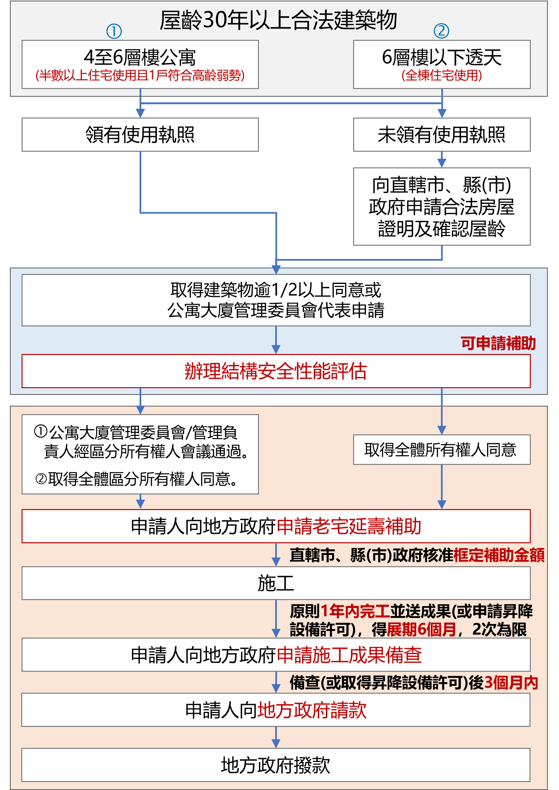

Taichung Old House Life Extension
台中老屋延壽與老宅延壽申請
協助屋齡 30 年以上合法建築物釐清補助資格、住戶共識、結構安全性能評估、修繕項目、申請文件與施工後請款流程，讓老屋更新不只修補外觀，也能改善安全、管線、無障礙與日常居住品質。
資料依據：臺中市政府都市發展局老宅延壽專區及內政部公告；本頁最近整理日期 2026-06-25。
主持建築師何中揚曾任台中市政府都市發展局建照管理科股長，可協助屋主、管委會與合作廠商釐清建物資格、申請路徑與執行介面。查看建築師簡介
News
台中老宅延壽最新消息
Process
老屋延壽申請流程
資格初判
確認屋齡、建物類型、合法建築物證明、住宅使用比例或全棟住宅使用條件。
住戶共識
公寓由管委會或管理負責人經區分所有權人會議通過；無管委會者需取得全體區分所有權人同意。透天共有者需取得全體所有權人同意。
結構安全性能評估
辦理初步或詳細評估，作為修繕補助與改善項目判斷依據。
修繕計畫與文件
彙整申請補助計畫書、身分證明、所有權與合法建築物證明、同意書、評估報告、契約或報價單等資料。
地方政府審查
向直轄市、縣市政府提出申請，依審查結果補正、排序或核定補助。
施工、備查與請款
原則 1 年內完工，可依規定展延；完工後提送施工成果備查，完成後向地方政府請款。
Official Flow
主管機關申請流程圖
可先用上方六個步驟掌握全貌，再開啟官方流程圖核對申請順序與文件。

老屋延壽、房屋拉皮與整建維護
- 老屋延壽著重屋齡、合法建築物資格、結構安全性能評估、住戶共識與補助申請流程。
- 房屋拉皮與外牆整修可納入整建維護策略，但需同時檢討安全、管線、防水、無障礙與施工可行性。
- 本所可協助社區、管委會、廠商與顧問整合圖說、估價、申請文件與施工界面，讓案件有清楚執行步驟。
規定重點
- 公寓原則為 4 至 6 層樓合法建築物，且住宅使用樓地板面積或戶數須占二分之一以上。
- 透天住宅原則為 6 層樓以下獨棟或連棟合法建築物，並以全棟住宅使用為主。
- 申請修繕補助前，通常需辦理建築物結構安全性能評估，作為補助與改善判斷基礎。
- 已申請建造執照、拆除執照，或已進入都更、危老重建並報核相關計畫者，可能不適用同一補助流程。
- 同一棟建築物已依其他法令或計畫申請相同補助項目並獲核准者，不得重複申請相同補助。
可評估修繕項目
- 公寓共用部分：增設昇降設備、樓梯間修繕、公共管線更新、違規物或老舊招牌拆除、立面修繕、屋頂防水隔熱、外掛式空調與外部管線安全改善、無障礙設施改善。
- 公寓專有部分：居家安全及無障礙設施設備、給排水電氣燃氣管線更新，以及必要室內裝修。
- 透天住宅：建築物立面、屋頂防水隔熱、外部管線安全改善、室外無障礙設施，以及符合條件之室內安全、無障礙與管線改善。
- 實際補助額度、比例與是否可申請，仍需依地方政府公告、審查結果及最新法規辦理。
歡迎合作廠商
- 歡迎結構技師、土木技師、室內裝修、營造、管線、防水、外牆、無障礙設備、昇降設備、消防與公寓大廈管理相關團隊合作。
- 合作廠商可提供估價、施工界面、材料品牌、工期與現場改善建議，協助案件從申請到施工更順暢。
- 若廠商已有社區或屋主需求，也可與本所共同進行資格檢核、文件整備與申請顧問服務。
歡迎諮詢顧問
- 屋主、管委會、管理負責人、社區主委、里辦公處、物業管理公司與不動產相關從業人員，皆可先諮詢可行性。
- 可先提供建物地址、樓層數、使用執照或建物登記資料、住戶共識狀況、想改善項目與現況照片。
- 本頁資訊作為初步整理，實際申請仍應依中央及地方主管機關最新公告、審查意見與個案條件判斷。
Checklist
申請前可先準備
- 申請補助計畫書、摘要表、補助項目與條件檢核表
- 申請人或代表人身分證明文件
- 區分所有權人會議紀錄、全體所有權人同意書或推派代表文件
- 近三個月內建物登記謄本
- 使用執照影本或地方政府認定之合法建築物證明
- 結構安全性能評估報告書
- 施工廠商契約書或報價單，並載明主要建材品牌
- 未曾受補助切結書及主管機關要求之其他文件
FAQ
台中老屋延壽常見問題
台中老屋延壽與老宅延壽是同一類服務嗎？
民間常用老屋延壽描述老舊住宅安全與機能改善；臺中市政府目前以老宅延壽機能復新計畫為公告名稱。本頁同時使用兩種稱呼，協助屋主找到正確申請資訊。
哪些台中住宅可先評估老宅延壽補助？
可先評估屋齡30年以上的合法建築物，包括4至6樓公寓及6樓以下透天住宅；仍須依住宅使用比例、建物狀況、重複補助及最新公告逐案確認。
申請老屋延壽前最先要準備什麼？
建議先整理建物地址、樓層數、建物登記謄本、使用執照或合法建築物證明、現況照片、住戶共識與想改善的項目，再由建築師協助資格初判。
房屋拉皮可以和管線、防水、無障礙改善一起評估嗎？
可以。外牆修繕只是整體改善的一部分，通常可一併檢討屋頂防水隔熱、公共管線、外部管線、居家安全與無障礙設施等項目。
何中揚建築師事務所可以協助哪些階段？
本所可協助資格檢核、住戶與專業團隊協調、結構安全性能評估介面、圖說與申請文件整理、施工整合、完工備查及請款流程。
Official Resources
公告、簡報與申請表下載
附件已整理於本站，點選後可直接開啟或下載。
官方1｜臺中市老宅延壽機能復新計畫公告1150624
官方2｜老宅延壽相關補助申請書件（官方內頁）
官方2｜一、公寓類4至6樓公寓修繕需求申請表.pdf
官方2｜一、公寓類4至6樓公寓修繕需求申請表.docx
官方2｜一、公寓類4至6樓公寓修繕需求申請表.odt
官方2｜二、透天類6樓以下透天住宅修繕需求申請表.pdf
官方2｜二、透天類6樓以下透天住宅修繕需求申請表.odt
官方2｜二、透天類6樓以下透天住宅修繕需求申請表.docx
官方2｜三、公寓類4至6樓公寓修繕計畫暨結構安全性能評估申請補助計畫書.pdf
官方2｜三、公寓類4至6樓公寓修繕計畫暨結構安全性能評估申請補助計畫書.docx
官方2｜三、公寓類4至6樓公寓修繕計畫暨結構安全性能評估申請補助計畫書.odt
官方2｜四、公寓類4至6樓公寓修繕計畫暨結構安全性能評估申請補助計畫書-應檢附文件說明.pdf
官方2｜四、公寓類4至6樓公寓修繕計畫暨結構安全性能評估申請補助計畫書-應檢附文件說明.docx
官方2｜四、公寓類4至6樓公寓修繕計畫暨結構安全性能評估申請補助計畫書-應檢附文件說明.odt
官方2｜五、透天類6樓以下透天住宅修繕計畫暨結構安全性能評估申請補助計畫書.pdf
官方2｜五、透天類6樓以下透天住宅修繕計畫暨結構安全性能評估申請補助計畫書.odt
官方2｜五、透天類6樓以下透天住宅修繕計畫暨結構安全性能評估申請補助計畫書.docx
官方2｜六、透天類6樓以下透天住宅修繕計畫暨結構安全性能評估申請補助計畫書-應檢附文件說明.pdf
官方2｜六、透天類6樓以下透天住宅修繕計畫暨結構安全性能評估申請補助計畫書-應檢附文件說明.docx
官方2｜六、透天類6樓以下透天住宅修繕計畫暨結構安全性能評估申請補助計畫書-應檢附文件說明.odt
官方3｜老宅延壽說明會簡報1150623
官方4｜內政部老宅延壽問答集
官方5｜老宅延壽機能復新計畫宣傳摺頁
官方7｜內政部老宅延壽計畫建築物修繕補助申請流程圖
官方8｜因應國際情勢強化老舊建築物修繕補助辦法
老宅延壽流程圖 PNG
內政部老宅延壽計畫建築物修繕補助申請流程圖 PDF
因應國際情勢強化老舊建築物修繕補助辦法 PDF
老宅延壽問答集 115.05 PDF
公寓類 4至6樓公寓修繕需求申請表 ODT
透天類 6樓以下透天住宅修繕需求申請表 ODT